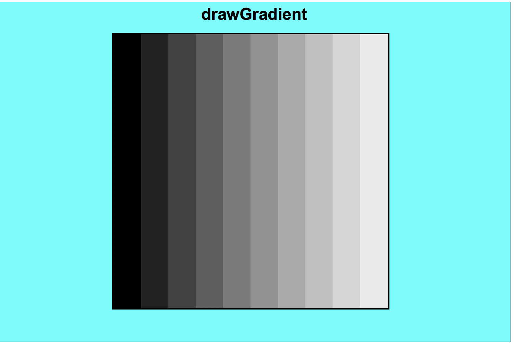
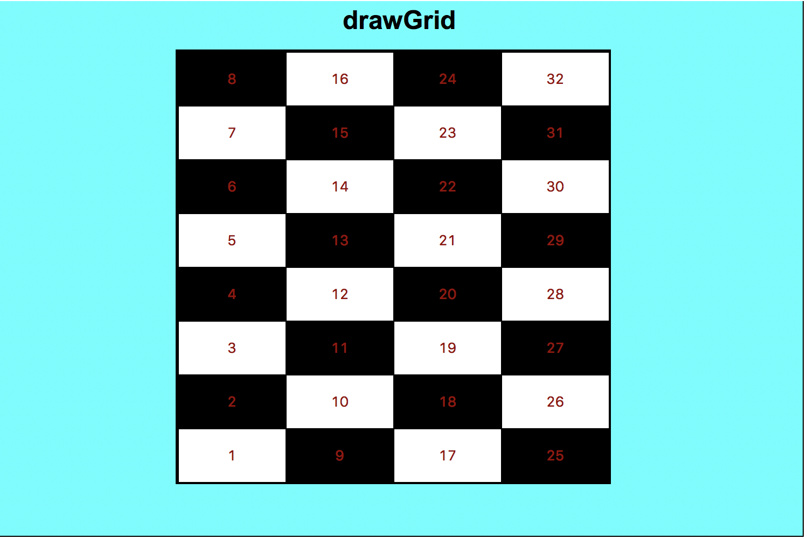

Download
this file. Complete it and then submit it to Autolab.
Note: We are only providing the starter code so you can use the graphics framework. There are no test cases for the Autograded portion and you should write your own test cases.
Please add your name, Andrew id, and section at the top of the file.
Write test functions for each function you write.
APPLY TOP-DOWN DESIGN, USE LOTS OF HELPER FUNCTIONS.
IMPORTANT: All the code above the #ignore_rest line is autograded, and all the code below it is ignored. Make sure you put all test functions and graphics below #ignore_rest.
From now on you will be graded on style. For this homework, however, style deductions are half-weighted, so the maximum number of points you can lose on style is 5 (out of 100). Please see here for the style rubric.
You may not use lists for this homework with the following exception: you can use split and splitlines methods of strings within a for loop (as shown in class). Otherwise, you are not allowed to have a variable that points to a list.
You may not use recursion, sets, dictionaries or any other constructs that we have not yet covered in class.
You will have 5 submissions on Autolab for this homework (one extra since we are not providing the starter file).
Questions
1. patternedMessage(message, pattern)
See here.
2. topLevelFunctionNames(code)
See here.
3. drawGradient(canvas, x0, y0, x1, y1)
Write the function drawGradient that takes 5 values – a canvas, a left, top, right, and bottom – describing a rectangular region of the canvas, and fills this region with a drawing of a gradient. This is achieved by drawing a series of rectangles, each a slightly different shade than the previous, uniformly changing from one color on the left to another color on the right. The gradient should progress black to white, using only 10 rectangles. Here is a screenshot to help (click on the image to see a larger version):

4. drawGrid(canvas, x0, y0, x1, y1)
Write the function drawGrid that takes 5 values – a canvas, a left, top, right, and bottom – describing a rectangular region of the canvas, and fills this region with a drawing of a rectangular grid. The grid should have 8 rows and 4 columns, and the cells should alternate black and white. Also, each cell will be labeled with a number (note that you can provide a number as the text value in create_text). The numbers start in the bottom-left cell and proceed upwards and then rightwards. Here is a screenshot to help (click on the image to see a larger version):
